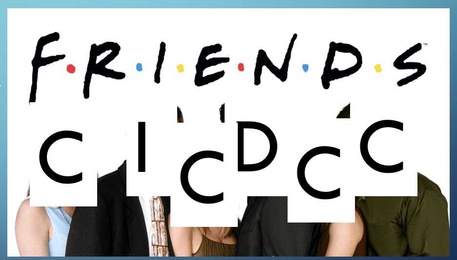
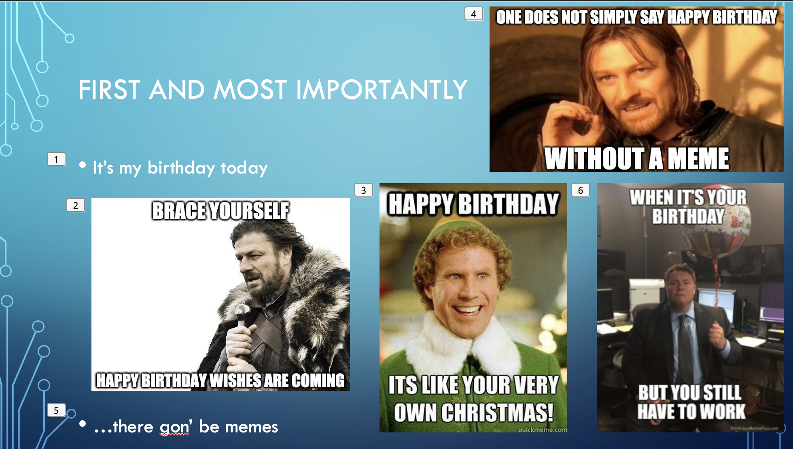
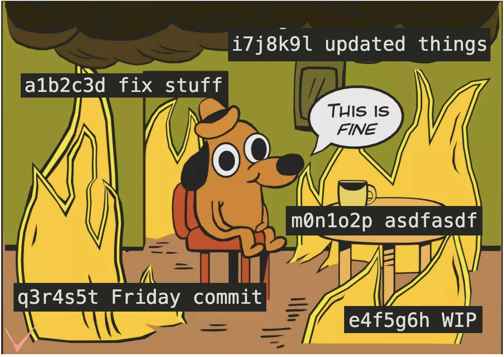
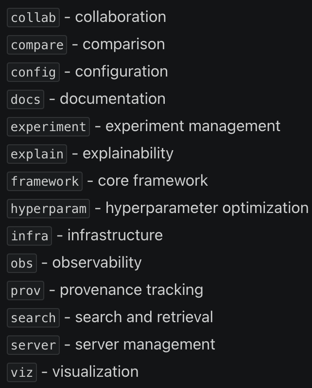
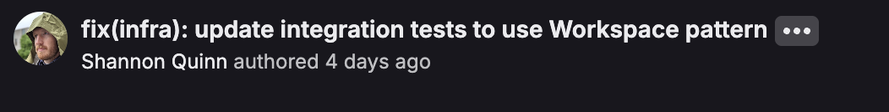
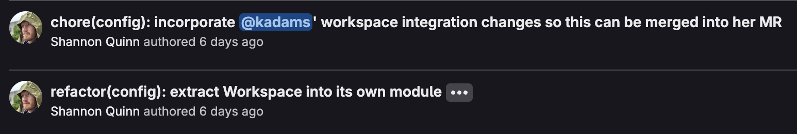
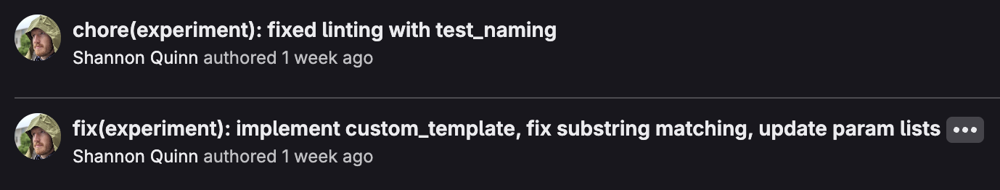
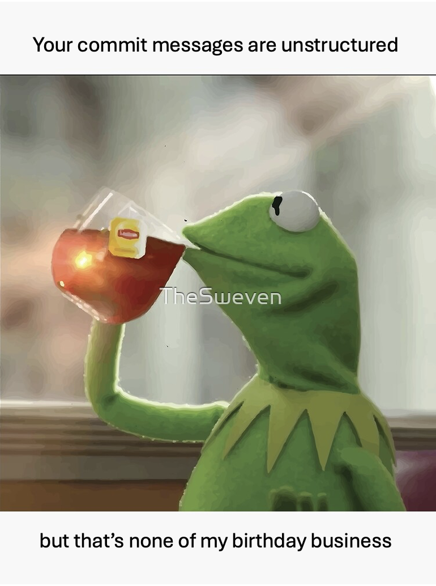

CI/CD, CC, & Friends

Shannon Quinn • Platform Engineering • March 2026
First and Most Importantly
- It's my birthday today
- ...there gon' be memes

Agenda
- Why commit messages matter
- Conventional Commits — the format
- Tooling: commitlint, semantic-release, changelogs
- CI/CD integration (GitHub Actions & GitLab CI)
- Live demo
- Q&A
The Problem
$ git log --oneline
a1b2c3d fix stuff
e4f5g6h WIP
i7j8k9l updated things
m0n1o2p asdfasdf
q3r4s5t Friday commit
We've all been here. What changed? Why? Is this a breaking change?
Me reading the git log on my birthday

Conventional Commits
<type>(scope): <description>
[optional body]
[optional footer(s)]
conventionalcommits.org
Common Types
feat — new featurefix — bug fixdocs — documentationstyle — formatting
refactor — restructuretest — add/fix testsci — CI/CD changeschore — maintenance
BREAKING CHANGE: in the footer, or ! after the type
Scopes in Practice: pmbench
14 development threads = 14 CC scopes

Each thread maps to a scope in our commit messages
Real Commits from pmbench



Why This Matters
Structured commits unlock automation:
git commit
→
commitlint
validates format
→
CI pipeline
→
semantic-release
bumps version
→
CHANGELOG
auto-generated
commitlint
Validates commit messages against CC rules
// commitlint.config.js
module.exports = {
extends: ['@commitlint/config-conventional'],
rules: {
'scope-enum': [2, 'always', [
'collab', 'compare', 'config', 'docs',
'experiment', 'explain', 'framework',
'hyperparam', 'infra', 'obs', 'prov',
'search', 'server', 'viz',
]],
},
};
Enforced locally via husky git hooks
semantic-release
Reads CC history → determines next version → publishes
Commit
fix(...)feat(...)feat(...)!
Version Bump
- 1.0.1 (patch)
- 1.1.0 (minor)
- 2.0.0 (major)
Also creates git tags, GitHub/GitLab releases, and publishes packages
Auto-generated CHANGELOG
## [1.2.0] - 2026-03-13
### Features
- **pipeline:** add batch processing for phenotype extraction (a1b2c3d)
### Bug Fixes
- **io:** handle missing columns in input CSV gracefully (e4f5g6h)
### BREAKING CHANGES
- **models:** restructure model registry API (i7j8k9l)
Zero manual effort. Generated from commit history.
GitHub Actions
# .github/workflows/release.yml
name: Release
on:
push:
branches: [main]
jobs:
release:
runs-on: ubuntu-latest
steps:
- uses: actions/checkout@v4
- uses: actions/setup-node@v4
with: { node-version: 20 }
- run: npm ci
- run: npx semantic-release
env:
GITHUB_TOKEN: ${{ secrets.GITHUB_TOKEN }}
GitLab CI
# .gitlab-ci.yml
release:
stage: deploy
image: node:20
only:
- main
script:
- npm ci
- npx semantic-release
variables:
GITLAB_TOKEN: $GITLAB_TOKEN
Same tooling, just swap the CI config and token variable.
semantic-release has a @semantic-release/gitlab plugin.
Decisions, decisions...
Live Demo
Let's see it in action
- Make a commit with a bad message → rejected
- Make a
fix commit → patch bump
- Make a
feat commit → minor bump
- Push → watch CI auto-release
Recap
- Conventional Commits = structured, machine-readable messages
- commitlint + husky = enforce locally
- semantic-release = auto-version + auto-release
- CHANGELOG = auto-generated from history
- Works with GitHub Actions and GitLab CI

Release v1.0.0 of my new year